The Shawshank Redemption
Main Content
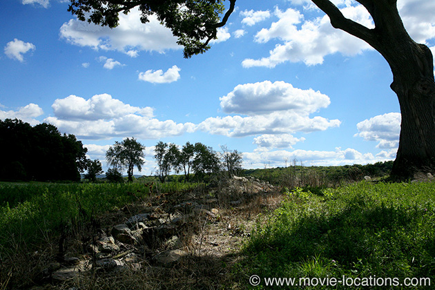
One of those odd sleepers, a modest success on release, Shawshank went on to a phenomenally popular afterlife on video and DVD.
Andy Dufresne (Tim Robbins) bides his time during twenty years’ imprisonment for the murder of his wife in this adaptation of a Stephen King story. And being Stephen King, the setting is once again Maine, though you’ll find ‘Shawshank State Prison’ in Ohio. It’s the forbiddingly Gothic Mansfield Reformatory, 100 Reformatory Road, Mansfield, on US Route 30, about 80 miles southwest of Cleveland.
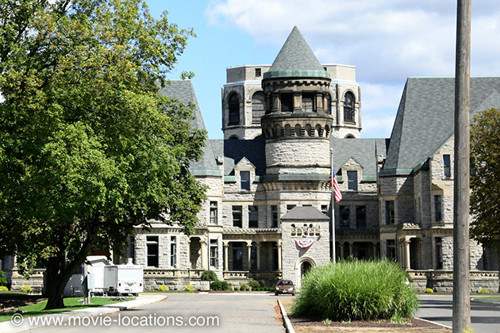
Built between 1886 and 1910, the reformatory remained in operation until 1990 and was scheduled for demolition when the film was made. In fact, much of the prison yard has now gone to make room for the adjacent Richland Correctional Institution, but the striking Administration Building lives on as a tourist attraction. Find it just north of downtown Mansfield, off South Olivesburg Road.
Although some prison interiors were recreated in the studio, the office of the corrupt Governor Norton (Bob Gunton) really is Mansfield Reformatory.
Prison scenes for Air Force One, Harry and Walter Go To New York and Tango & Cash were also filmed in the reformatory.
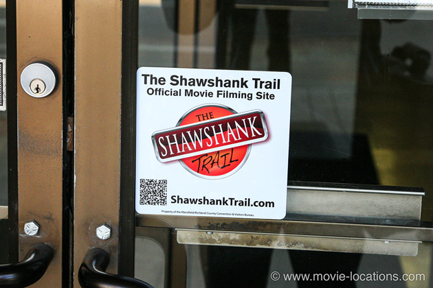
Mansfield Tourism has laid out a helpful Shawshank Trail if you want to explore the film’s other locations in-Mansfield and the surrounding area. Stickers identify the key locations.
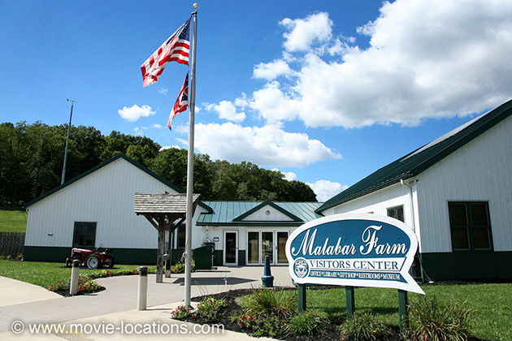
The golf pro’s house, where Andy’s wife and her lover are murdered, is the Pugh Cabin, which you’ll find on the grounds of Malabar Farm State Park, 4050 Bromfield Road, south of Lucas, a few miles southeast of-Mansfield itself.
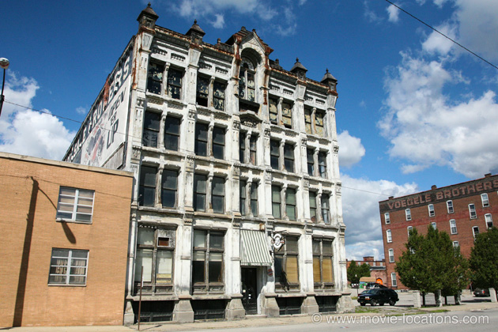
About 40 miles west of Mansfield, in the town of Upper Sandusky, Andy’s trial is held at Wyandot Courthouse, 109 South Sandusky Avenue.
Incidentally, 228 South 8th Street, also in Upper Sandusky, served as the woodwork shop of ‘Shawshank Prison’.
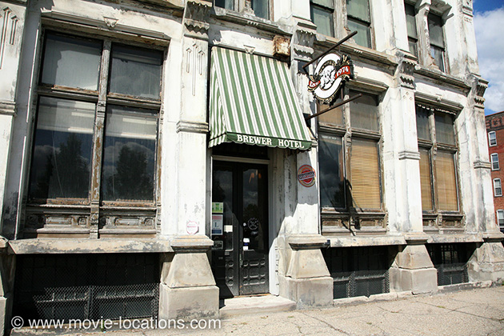
The town into which the elderly, institutionalised Brooks (James Whitmore) is released is Mansfield itself. The ‘Brewer’, the halfway house where he carves ‘Brooks was here’ into the beams, is the Haunted Bissman Building, 193 North Main Street. Built in 1887 as HQ of the Bissman grocery company, the now-disused building is supposedly inhabited by mysterious spirits, and you can participate in regular paranormal investigations. The Bissman is also featured in Edward Douglas’s 2010 horror The Dead Matter, with splatter-master Tom Savini.
The interior of the ‘Brewer’, incidentally, was filmed inside Mansfield Reformatory.
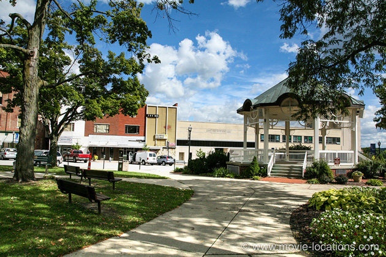
South from the Bissman Building, on Main Street, it’s in-Mansfield’s Central Park that Brooks sits on a bench forlornly feeding the pigeons, hoping to get a glimpse of Jake, the crow he reared.
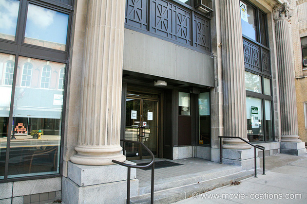
‘Maine National Bank’, into which the invented ‘Randall Stephens’ strides to withdraw the Warden’s money, is Huntington Bank, 19 West Main Street, in Ashland, about 12 miles northeast of Mansfield. The bank is currently closed.
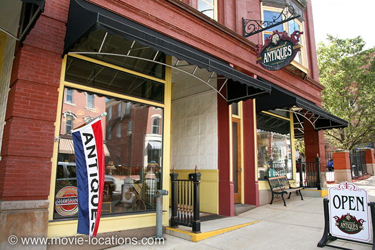
It’s back to Mansfield, where Carrousel Antiques, 118 North Main Street, provided the gun store window into which Red (Morgan Freeman) looks as he considers breaking parole to be returned to prison.
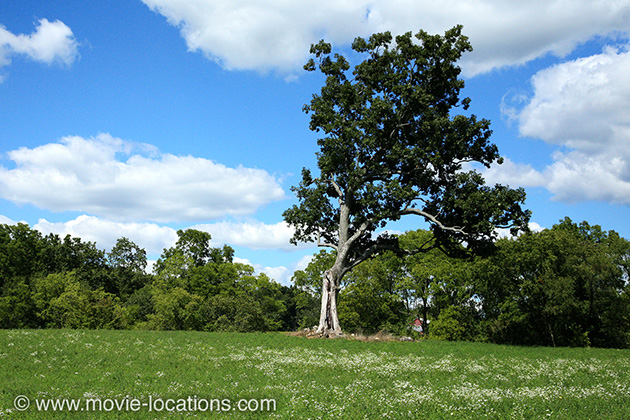
The ‘hayfield up near Buxton’, to which Red travels keeping his promise to Andy, is a private field near to Malabar Farm. You can see the site of the oak tree north of Pleasant Valley Road (Co Hwy 303) at Bromfield Road, a little to the east of the entrance to the farm. The majestic tree was a little reduced after being split in two by a lightning strike in 2011, but in 2016 was finally toppled by strong winds. Its remains were cut down and removed.
Back in Ashland, not far from the bank, Revivals Thrift Store 345 Orange Street became The ‘Trailways Bus Station’, where Red boards the bus to ‘Fort Hancock, Texas’.
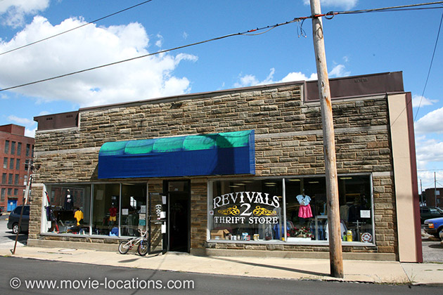
Andy and Red are finally reunited in ‘Mexico’, but that’s not the blue of the Pacific. It’s the Caribbean, and the beach at ‘Zihuatanejo’ is Sandy Point National Wildlife Refuge, a two-mile crescent of sand just south of Frederiksted on the southwestern tip of St Croix, largest of the U.S. Virgin islands, an unincorporated territory of the United States.
It is a remote and peaceful spot, but needs to be treated with respect. The beach is a hatching ground for leatherback turtles, and open only at limited times (10am to 4pm on Saturdays and Sundays), and not at all during the breeding season.
• Many thanks to Erik Hollander for help with this section.
Visit Info
Visit The Film Locations
Ohio
Visit: Ohio
Visit: Mansfield
Visit: Mansfield Reformatory, 100 Reformatory Road, Mansfield, OH 44905 (tel: 419.522.2644)
Follow: the Shawshank Trail
Visit: the Haunted Bissman Building, 193 North Main Street, Mansfield, OH 44902 (tel: 419.295.5002)
Visit: Malabar Farm State Park, 4050 Bromfield Road, Lucas, OH 44843 (tel: 419.892.2784)
Virgin Islands
Visit: Virgin Islands
Getting to: Virgin Islands
Visit: St Croix
Visit: Sandy Point National Wildlife Refuge, Frederiksted, St Croix 00840, USVI